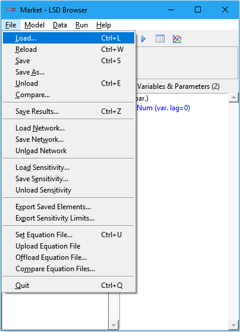

LSD Browser – Menu File
|
 |
2. Save Results 7. Quit |
This menu deals with operations involving files. It is organized in groups, according to the type of the file(s) involved. All file operations work, by default, from the LSD model home directory.
Operations involving LSD model configuration files:
· Load
· Reload
· Save
· Save As
· Unload
· Compare
Shortcuts: Ctrl+L or click the yellow folder icon on the tool bar.
Load a previously saved model configuration file (.lsd extension). If there are unsaved changes to the currently loaded configuration, the user must confirm the operation or save the current configuration before trying to reload a new one.
The currently loaded configuration file name shows in the title bar of all open LSD model program windows.
Shortcuts: Ctrl+W or click the green recycle icon on the tool bar.
Reload the current model configuration file. If there are unsaved changes to the currently loaded configuration, the user must confirm the operation or save the current configuration before trying to reload it again.
This command is normally used after a simulation run and before running the same configuration again. This is handful because LSD does not allow running a simulation immediately after finishing another one.
Shortcuts: Ctrl+S or click the blue floppy disk icon on the tool bar.
Save the current model configuration to the last used configuration file (.lsd extension). If no configuration file name was set, the default is Sim1.lsd.
In general, users do not need to manually save a configuration since it can be automatically saved just before running a simulation, using the same file name of the configuration file previously loaded, except if the user chooses otherwise. However, the Save command is still useful when doing larger changes in the model configuration, to prevent losing the modifications in case of closing the LSD Browser before running the simulation.
A copy of the previous content of the configuration file is saved under the .bak extension.
Save the current model configuration to the file and the location specified by the user (.lsd extension). If no configuration file name was set before, the default is Sim1.lsd. If the user wants to save the configuration to a new file, it must explicitly type the new name.
This command is frequently used to create a copy of an existing configuration before experimenting with some changes. Note that the configuration files do not have to be stored in the model home directory. In fact, they can be stored anywhere in the file system, including in subdirectories of the home directory. This is useful because LSD automatically saves simulation run results data to the same location where the configuration file is, allowing the easy organization of the results of different model configurations.
Another situation in which this command may be used is after a simulation run. As in this case the model configuration contains the values obtained during the very last time step of the simulation, LSD does not allow to launch a simulation right away or to overwrite the existing configuration with the loaded data. However, users can save the last step configuration with a different name and then load it as a new configuration, virtually “extending” a simulation time span beyond the time steps originally planned.
If the chosen configuration file already exists, a copy of its previous content is saved under the .bak extension.
Shortcut: Ctrl+E.
Remove the model configuration currently loaded, restoring the initial LSD Browser state. If there are unsaved changes to the currently loaded configuration, the user must confirm the operation or save the current configuration before trying to unload it.
This command may be useful when one wants to (re) create the model configuration from the scratch.
Compare the currently loaded model configuration file with any other LSD model configuration file (.lsd extension). After the user supplies the file to compare with, the text-file comparison utility (TkDiff) is launched with both files loaded. Differences between the configuration files are shown in color. Please refer to the TkDiff help pages for details.
Please note that model configuration files should not be directly edited, at the risk of corrupting them.
Shortcut: Ctrl+Z.
Saves the all the data of a previous simulation run, if any. A results file base name is requested (a default name is proposed). The extension is automatically provided according to the compressed file checkbox (.res.gz or .res). Saved results files can be later loaded in the Analysis of Result module.
There is an option to save the data as plain comma-separated values (CSV) format, for easy usage in other applications (this is not required or recommended for R).
User has also the option to save a copy of the model configuration used in the simulation under the same name as the results (important for future reproducibility of the results).
Operations involving LSD network files:
Load a network structure from a file (Pajek format, .net extension) into a set of (brother) Object instances. The user is requested to select the existing network file and the Object type associated with the network nodes.
Each set of instances of a single Object type can participate in a single network. If the selected Object type already has a network associated with it, the new network will overwrite the existing one. If there are less network nodes than Object instances, the extra instances will not take part in the network. Conversely, if there are fewer instances than nodes, the additional required instances will be automatically created.
Save an existing network structure associated to a set of (brother) Object instances to a file (Pajek format, .net extension). The user is requested to select the Object type associated with the existing network nodes in LSD and the name (and location) of the output file (if it already exists, it will be overwritten).
Remove an existing network structure associated to a set of (brother) Object instances. The user is requested to select the Object type associated with the existing network nodes in LSD. The respective Object instances are not deleted.
Operations involving LSD sensitivity analysis files:
Load a previously saved LSD sensitivity analysis (SA) test set file (.sa extension). The user is requested to select the existing SA test set file .The SA test data in the file is added to any already loaded SA test set.
SA test set files may be created using LSD SA tools and the File>Save Sensitivity command (see below). The SA test set file is a text file with a fix format which can also be created by other applications. Each line in the file defines the range or set of values to be used in the SA exploration of the parametric space (see here for details). The format of the lines is:
name lag number type: val1 val2 …
name is the name of the Parameter or lagged Variable, lag is the lag of lagged Variables (1, 2, …) or 0 for Parameters, number is the number of test values (equal to 2 for a max/min range or at least 2 for a set of values), type is a character flag indicating if the Parameter or Variable shall be explored as an integer (i) or a floating-point (f) value, and val1, val2, … are the values to be explored (only the first number will be considered).
Save the sensitivity analysis (SA) test set currently loaded to a SA file (.sa extension). The user is requested to select the name (and location) of the output file (if it already exists, it will be overwritten). By default, SA test set files are saved under the same name and directory as the current model configuration.
The SA test set data is not saved to the LSD model configuration file, so the user must use this option to save the created SA test sets. Also, a single model configuration may have more than one SA test set files associated to it.
Removes all the existing sensitivity analysis (SA) test data loaded. It does not affect the currently loaded model configuration.
Operations involving exporting LSD model configuration and sensitivity analysis data:
Saves to a file the list of elements of a LSD model configuration marked to have the time series saved during the simulation run (as set in the element settings). The user may choose the directory and the text file to be produced.
Saves to a file the list of minimum and maximum sensitivity analysis (SA) test values for each the SA Parameters and lagged Variables currently loaded. The user may choose the directory and the text file to be produced.
Operations involving LSD equation file:
Shortcut: Ctrl+U.
Assign an equation file to the model. In general LSD should be able to identify the equation file automatically. However, in some cases the modeler may want to modify the file associated to it.
Store into the model configuration file a snapshot of the current equation file used to generate the LSD model program. This command does not support multi-file equation sources.
Please note that the equation file is stored into the configuration for documentation and backup purposes only. These Equations are not used for the creation of the LSD model program.
Generate an equation file from the copy stored in the model configuration file.
Please note that the equation file stored in the model configuration file is likely an older version than the current one. Use this option to restore a known-good equation file. It is advisable to restore the equation file under a different name, to avoid overwriting the current one.
Compare the current equation file (used to generate the LSD model program) with the snapshot stored in the model configuration file, if any, using TkDiff text-file comparison utility.
This command is useful to track the changes made to the equation file since the last snapshot with the File>Upload Equation File command (above).
Shortcuts: Ctrl+Q or click the X on the title bar.
Exit the LSD model program, closing all LSD windows. If there are unsaved model configurations or simulation results, a dialog window will confirm before quitting.